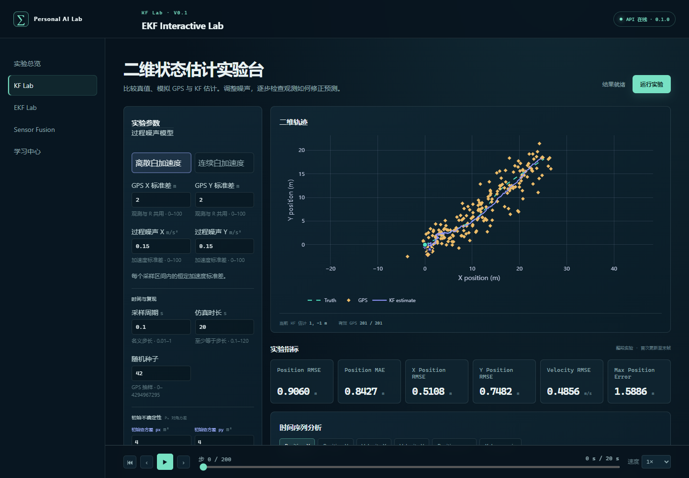
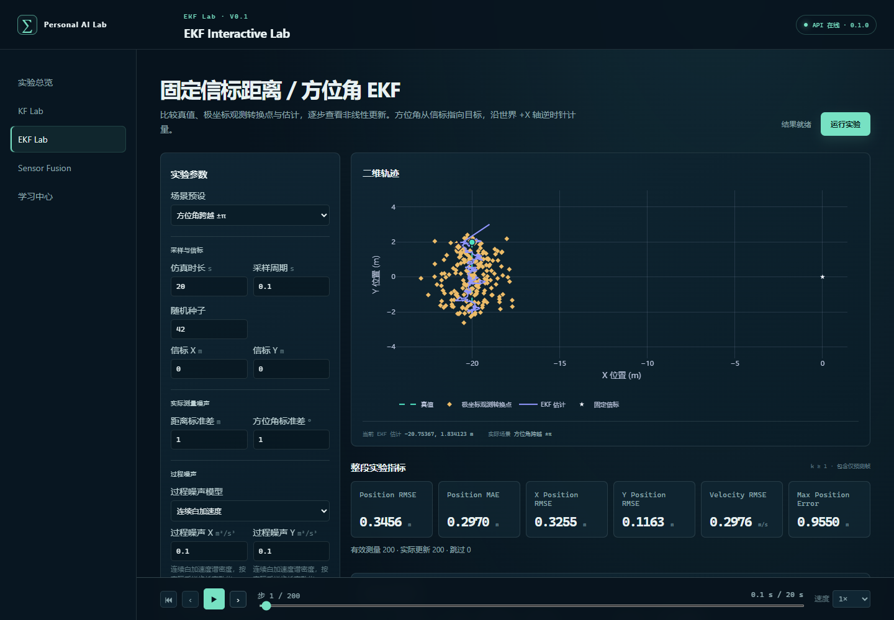
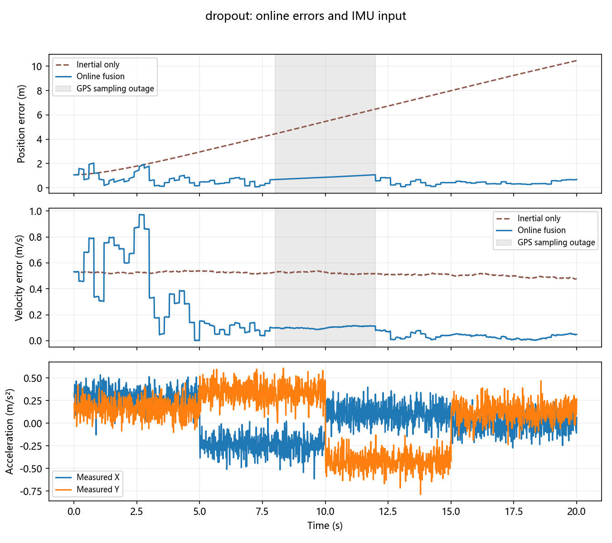

KF · 线性位置观测
用合成 GPS 位置校正二维匀速预测。调整测量噪声和过程模型，查看轨迹、误差、创新与增益。
当观测带噪、角度跨界或 GPS 晚到时，估计器如何修正状态？这个本地工作台用二维合成轨迹、逐帧回放和结果导出，把每次预测和更新的依据展示出来。
三个模块都在二维平面上估计位置和速度。场景、噪声和初值可以配置，结果可逐帧查看并导出 JSON。
用合成 GPS 位置校正二维匀速预测。调整测量噪声和过程模型，查看轨迹、误差、创新与增益。
用固定信标的非线性观测更新二维状态。可以查看局部雅可比、方位残差包角、近信标保护与跳过更新。
已知姿态下使用去重力后的世界坐标二维加速度预测，以 GPS 位置校正。场景覆盖中断恢复、固定延迟回放与 NIS 门限拒绝。




以下来自 V0.1 的合成实验，随机种子为 42。每组对照沿用同一场景内的观测和评分口径。




固定延迟预设设置 60 个 IMU tick（0.6 s）。97 条观测到达并被接受，实验结束时还有 3 条待到达。滤波器从被接受观测的采样时刻重传播，已输出的在线历史保持冻结。
React/Vite 提交参数并呈现轨迹及回放。FastAPI 校验请求，由 Python 和 NumPy 生成数据、执行滤波并返回诊断。离线命令复用同一套实验计算逻辑，并另行输出配置、数据与 Matplotlib 图表。
第 3 步记录了 193 项严格回归通过。实际 HTTP 对照覆盖 KF 默认、EKF 四个预设和 Fusion 五种配置，比较时间轴、观测、估计、诊断与指标。截图来自 Chrome 的本地生产预览。
证据限于二维合成场景。Fusion 假设姿态已知，延迟为单源固定值。三维姿态、零偏估计、真实飞行验证、随时间变化的迟到及乱序均超出 V0.1 范围。
静态作品集展示截图、图表和文章。运行完整工作台需要先取得工程文件，再启动本机前后端。使用 Python 3.12、Node.js 24 与 npm，按源码中的依赖声明安装。
# 后端终端，从专题根目录执行
py -3.12 -m venv .venv
.\.venv\Scripts\python.exe -m pip install -r requirements.txt
.\.venv\Scripts\python.exe -m uvicorn backend.main:app --host 127.0.0.1 --port 8000
# 新开前端终端，从专题根目录执行
cd frontend
npm.cmd ci
npm.cmd run dev# 后端终端，从专题根目录执行
python3.12 -m venv .venv
. .venv/bin/activate
python -m pip install -r requirements.txt
python -m uvicorn backend.main:app --host 127.0.0.1 --port 8000
# 新开前端终端，从专题根目录执行
cd frontend
npm ci
npm run dev在浏览器打开前端终端打印的本机地址。Windows 与 WSL/Linux 分别创建虚拟环境。
从专题根目录使用该系统的虚拟环境运行以下命令。PowerShell 可将命令中的 python 换成 .\.venv\Scripts\python.exe。各实验输出到指定的独立目录。
python -m experiments.run --experiment basic --output-dir repro/kf
python -m experiments.run_ekf --scenario angle-wrap --output-dir repro/ekf
python -m experiments.run_fusion --scenario dropout --output-dir repro/fusion
python -m pytest -q -W error